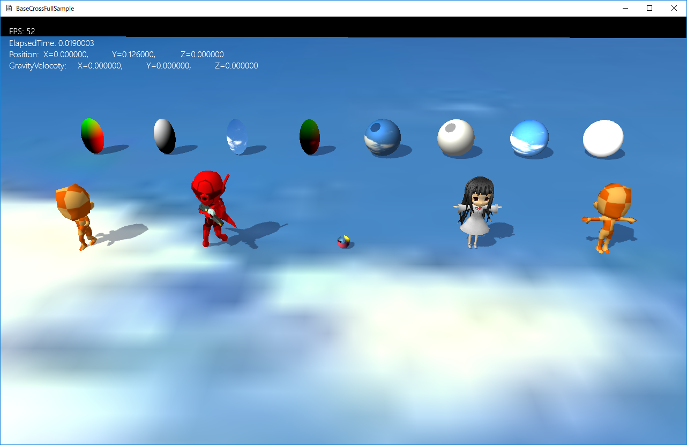
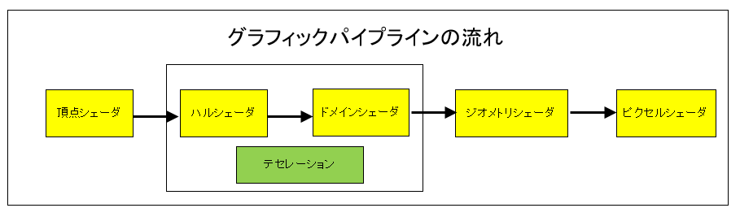

図1302a
このサンプルはシンプルな３Ｄ表現のサンプルです。１、基本色（PNTフォーマットは法線ライティング）にデフューズ（拡散光）を掛ける。 ２、１にエミッシブ色を足す ３、PNTフォーマットはスペキュラーを足す ４、３を基本色とし、テクスチャがある場合はサンプリングした値に３を掛ける。 ５、影がある場合は影要素を掛ける

図1302b
この中で頂点シェーダとピクセルシェーダは必須なシェーダです。
void PcSphere::OnCreate() {
auto ptrTrans = GetComponent<Transform>();
ptrTrans->SetScale(Vec3(1.0f, 1.0f, 1.0f));
Quat qt;
qt.identity();
ptrTrans->SetQuaternion(qt);
ptrTrans->SetPosition(m_StartPos);
//描画コンポーネント
auto ptrDraw = AddComponent<PCStaticDraw>();
vector<VertexPositionNormalTexture> vertices;
vector<VertexPositionColor> new_vertices;
vector<uint16_t> indices;
MeshUtill::CreateSphere(1.0f, 18, vertices, indices);
for (size_t i = 0; i < vertices.size(); i++) {
VertexPositionColor newV;
newV.position = vertices[i].position;
newV.color = Col4(
newV.position.x * 2.0f,
newV.position.y * 2.0f,
newV.position.z * 2.0f,
1.0f);
new_vertices.push_back(newV);
}
ptrDraw->CreateOriginalMesh(new_vertices, indices);
ptrDraw->SetOriginalMeshUse(true);
//影をつける
auto ptrShadow = AddComponent<Shadowmap>();
ptrShadow->SetMeshResource(ptrDraw->GetOriginalMeshResource());
}
ptrDraw->CreateOriginalMesh(new_vertices, indices);
ptrDraw->SetOriginalMeshUse(true);
//影をつける
auto ptrShadow = AddComponent<Shadowmap>();
ptrShadow->SetMeshResource(ptrDraw->GetOriginalMeshResource());
//--------------------------------------------------------------------------------------
///頂点を変更する行動クラス
//--------------------------------------------------------------------------------------
class VertexBehavior : public Behavior {
float m_TotalTime;
public:
//--------------------------------------------------------------------------------------
/*!
@brief コンストラクタ
@param[in] GameObjectPtr このコンポーネントを所持するゲームオブジェクト
*/
//--------------------------------------------------------------------------------------
VertexBehavior(const shared_ptr<GameObject>& GameObjectPtr) :
Behavior(GameObjectPtr),
m_TotalTime(0)
{}
//--------------------------------------------------------------------------------------
/*!
@brief デストラクタ
*/
//--------------------------------------------------------------------------------------
virtual ~VertexBehavior() {}
//--------------------------------------------------------------------------------------
/*!
@brief 伸び縮みする
@tparam T 頂点の型
@return なし
*/
//--------------------------------------------------------------------------------------
template<typename T, typename T2>
void ExpandAndContract() {
float elapsedTime = App::GetApp()->GetElapsedTime();
m_TotalTime += elapsedTime;
if (m_TotalTime >= XM_2PI) {
m_TotalTime = 0;
}
auto ptrDraw = GetGameObject()->GetDynamicComponent<T2>();
const vector<T>& backupVec = ptrDraw->GetOriginalMeshResource()->GetBackupVerteces<T>();
vector<T> newVec;
for (auto& v : backupVec) {
T newV;
newV = v;
auto len = (sin(m_TotalTime) * 0.5f) + 1.0f;
newV.position.x *= len;
newV.position.z *= len;
newVec.push_back(newV);
}
ptrDraw->UpdateVertices(newVec);
}
};
auto ptrDraw = GetGameObject()->GetDynamicComponent<T2>();
void PcSphere::OnUpdate() {
auto beh = GetBehavior<VertexBehavior>();
beh->ExpandAndContract<VertexPositionColor, PCStaticDraw>();
}
//初期化
void PntSpSphere::OnCreate() {
auto ptrTrans = GetComponent<Transform>();
ptrTrans->SetScale(Vec3(1.0f, 1.0f, 1.0f));
Quat qt;
qt.identity();
ptrTrans->SetQuaternion(qt);
ptrTrans->SetPosition(m_StartPos);
//影をつける
auto ptrShadow = AddComponent<Shadowmap>();
ptrShadow->SetMeshResource(L"DEFAULT_SPHERE");
//描画コンポーネント
auto ptrDraw = AddComponent<PNTStaticDraw>();
ptrDraw->SetSpecular(Col4(1.0f, 1.0f, 1.0f, 1.0f));
ptrDraw->SetMeshResource(L"DEFAULT_SPHERE");
if (m_TextureUse) {
ptrDraw->SetTextureResource(L"SKY_TX");
}
}
void Scene::CreateResourses() {
wstring dataDir;
//サンプルのためアセットディレクトリを取得
App::GetApp()->GetAssetsDirectory(dataDir);
//各ゲームは以下のようにデータディレクトリを取得すべき
//App::GetApp()->GetDataDirectory(dataDir);
//中略
auto modelMesh = MeshResource::CreateBoneModelMesh(dataDir, L"Chara_R.bmf");
App::GetApp()->RegisterResource(L"Chara_R_MESH", modelMesh);
auto staticModelMesh = MeshResource::CreateStaticModelMesh(dataDir, L"Character_01.bmf");
App::GetApp()->RegisterResource(L"MODEL_MESH", staticModelMesh);
//スタティックモデル(マルチメッシュ)の通常リソース
auto staticMultiModelMesh = MultiMeshResource::CreateStaticModelMultiMesh(dataDir, L"ObjectOnly.bmf");
App::GetApp()->RegisterResource(L"ObjectOnly_MESH", staticMultiModelMesh);
//ボーンモデル(マルチメッシュ)の通常リソース
auto multiModelMesh = MultiMeshResource::CreateBoneModelMultiMesh(dataDir, L"Object_WalkAnimation.bmf");
App::GetApp()->RegisterResource(L"Object_WalkAnimation_MESH", multiModelMesh);
}
//初期化
void BoneChara::OnCreate() {
//初期位置などの設定
auto ptrTrans = GetComponent<Transform>();
ptrTrans->SetScale(0.5f, 0.5f, 0.5f);
ptrTrans->SetRotation(0.0f, 0.0f, 0.0f);
ptrTrans->SetPosition(m_StartPos);
Mat4x4 spanMat; // モデルとトランスフォームの間の差分行列
spanMat.affineTransformation(
Vec3(1.0f, 1.0f, 1.0f),
Vec3(0.0f, 0.0f, 0.0f),
Vec3(0.0f, 0.0f, 0.0f),
Vec3(0.0f, 0.0f, 0.0f)
);
//影をつける（シャドウマップを描画する）
auto ptrShadow = AddComponent<Shadowmap>();
//影の形（メッシュ）を設定
ptrShadow->SetMeshResource(L"Chara_R_MESH");
ptrShadow->SetMeshToTransformMatrix(spanMat);
//描画コンポーネントの設定
auto ptrDraw = AddComponent<PNTBoneModelDraw>();
//描画するメッシュを設定
ptrDraw->SetMeshResource(L"Chara_R_MESH");
ptrDraw->SetMeshToTransformMatrix(spanMat);
ptrDraw->AddAnimation(L"Default", 0, 50, true, 20.0f);
ptrDraw->ChangeCurrentAnimation(L"Default");
//透明処理
SetAlphaActive(true);
}
//更新
void BoneChara::OnUpdate() {
//アニメーションを更新する
auto ptrDraw = GetComponent<PNTBoneModelDraw>();
float elapsedTime = App::GetApp()->GetElapsedTime();
ptrDraw->UpdateAnimation(elapsedTime);
}
//初期化
void BoneMultiMeshChara::OnCreate() {
//初期位置などの設定
auto ptrTrans = GetComponent<Transform>();
ptrTrans->SetScale(0.5f, 0.5f, 0.5f);
ptrTrans->SetRotation(0.0f, 0.0f, 0.0f);
ptrTrans->SetPosition(m_StartPos);
Mat4x4 spanMat; // モデルとトランスフォームの間の差分行列
spanMat.affineTransformation(
Vec3(1.0f, 1.0f, 1.0f),
Vec3(0.0f, 0.0f, 0.0f),
Vec3(0.0f, 0.0f, 0.0f),
Vec3(0.0f, 0.0f, 0.0f)
);
//影をつける（シャドウマップを描画する）
auto ptrShadow = AddComponent<Shadowmap>();
//影の形（メッシュ）を設定
ptrShadow->SetMultiMeshResource(L"Object_WalkAnimation_MESH");
ptrShadow->SetMeshToTransformMatrix(spanMat);
//描画コンポーネントの設定
auto ptrDraw = AddComponent<PNTBoneModelDraw>();
//描画するメッシュを設定
ptrDraw->SetMultiMeshResource(L"Object_WalkAnimation_MESH");
ptrDraw->SetSamplerState(SamplerState::LinearWrap);
ptrDraw->SetMeshToTransformMatrix(spanMat);
ptrDraw->AddAnimation(L"Default", 0, 30, true, 10.0f);
ptrDraw->ChangeCurrentAnimation(L"Default");
}
//更新
void BoneMultiMeshChara::OnUpdate() {
auto ptrDraw = GetComponent<PNTBoneModelDraw>();
float elapsedTime = App::GetApp()->GetElapsedTime();
ptrDraw->UpdateAnimation(elapsedTime);
}
//初期化
void StaticChara::OnCreate() {
//初期位置などの設定
auto ptrTrans = GetComponent<Transform>();
ptrTrans->SetScale(0.5f, 0.5f, 0.5f);
ptrTrans->SetRotation(0.0f, 0.0f, 0.0f);
ptrTrans->SetPosition(m_StartPos);
Mat4x4 spanMat; // モデルとトランスフォームの間の差分行列
spanMat.affineTransformation(
Vec3(1.0f, 1.0f, 1.0f),
Vec3(0.0f, 0.0f, 0.0f),
Vec3(0.0f, 0.0f, 0.0f),
Vec3(0.0f, 0.0f, 0.0f)
);
//影をつける（シャドウマップを描画する）
auto ptrShadow = AddComponent<Shadowmap>();
//影の形（メッシュ）を設定
ptrShadow->SetMeshResource(L"MODEL_MESH");
ptrShadow->SetMeshToTransformMatrix(spanMat);
auto ptrDraw = AddComponent<PNTStaticModelDraw>();
ptrDraw->SetMeshResource(L"MODEL_MESH");
ptrDraw->SetMeshToTransformMatrix(spanMat);
}
//初期化
void StaticMultiMeshChara::OnCreate() {
//初期位置などの設定
auto ptrTrans = GetComponent<Transform>();
ptrTrans->SetScale(0.5f, 0.5f, 0.5f);
ptrTrans->SetRotation(0.0f, 0.0f, 0.0f);
ptrTrans->SetPosition(m_StartPos);
Mat4x4 spanMat; // モデルとトランスフォームの間の差分行列
spanMat.affineTransformation(
Vec3(1.0f, 1.0f, 1.0f),
Vec3(0.0f, 0.0f, 0.0f),
Vec3(0.0f, 0.0f, 0.0f),
Vec3(0.0f, 0.0f, 0.0f)
);
//影をつける（シャドウマップを描画する）
auto ptrShadow = AddComponent<Shadowmap>();
//影の形（メッシュ）を設定
ptrShadow->SetMultiMeshResource(L"ObjectOnly_MESH");SetMeshToTransformMatrix(spanMat);
auto ptrDraw = AddComponent<PNTStaticModelDraw>();
ptrDraw->SetMultiMeshResource(L"ObjectOnly_MESH");
ptrDraw->SetMeshToTransformMatrix(spanMat);
}